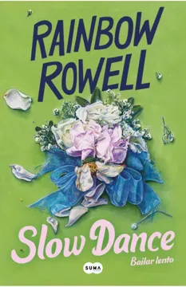

Slow Dance
- 
- Título en español: Bailar lento
- Autor: Rainbow Rowell
- Fecha de publicación original: 30 de julio de 2024
Sinopsis
Una historia de amor divertida y conmovedora sobre segundas oportunidades, reencuentros y desencuentros… y sobre enmendar los errores del pasado.
Cuando crecía en el lado equivocado de Omaha, Shiloh sólo pensaba en escapar, en dejar todo atrás e iniciar una etapa más interesante en su vida. En aquel entonces al menos tenía a Cary: Cary la soportaba, Cary la hacía reír, aunque a los dieciséis, conduciendo la vieja camioneta de su mamá, Cary tenía las cosas peor que ella. Sólo su amistad logró que sobreviviera a la preparatoria… pero cuando ella se fue a la universidad, él se incorporó a la Marina.
Han pasado catorce años desde entonces. Ahora Shiloh tiene treinta y tres años… y no, nunca logró escapar; incluso ahora vive en la misma casa en la que pasó su niñez. Trabaja en el teatro, sí, pero no en el escenario, como soñaba. Y está divorciada: una mamá soltera, igual que su madre (pero sin la serie infinita de novios).
Cuando un amigo de la preparatoria la invita a su boda, lo último que Shiloh quiere es ver a sus amigos del pasado, pero compra un vestido, se pone maquillaje y se abotona una flor de terciopelo en el corazón, deseando (incluso a pesar de los nervios) encontrarse con Cary… a quien nunca se dio cuenta de que amaba, hasta que lo dejó ir.
/5
Tenía muchas ganas de leer Slow Dance, pero la verdad es que no era lo que esperaba. Desde el inicio, el ritmo se me hizo desesperantemente lento. Pasé más de la mitad del libro esperando que algo realmente sucediera, pero cada capítulo parecía estirarse sin un propósito claro.
Otro punto que me frustró bastante fueron los personajes. Sus problemas de comunicación eran tan grandes que, en lugar de generar tensión o emoción, solo lograron que me sintiera agotada. A veces parecía que evitaban hablar solo porque sí, y eso hacía que su relación no se sintiera del todo creíble.
Y luego, el final... Después de arrastrar la historia por tanto tiempo, de repente todo se resolvió en un par de páginas. Fue como si la autora se diera cuenta de que tenía que cerrar la historia y lo hiciera de golpe, sin darle el espacio que realmente necesitaba. Me dejó con la sensación de que falló el desarrollo y que se desperdició todo el potencial que la historia pudo haber tenido.
En resumen, Slow Dance no fue para mí. Si te gustan los libros con un ritmo pausado y personajes que tardan en resolver sus problemas, tal vez lo disfrutes más. Pero si, como yo, buscas una historia que fluya de manera más natural y con un final bien construido, este probablemente no sea el mejor libro para elegir.
.5/5
El amor, el miedo y el paso del tiempo marcan la historia de Shiloh, una protagonista llena de inseguridades. Su relación con Cary es dulce, pero la falta de comunicación entre ellos es frustrante.
Los flashbacks ralentizan la lectura al no estar claramente marcados en la cronología, aunque algunos diálogos dejan qué pensar, especialmente sobre la maternidad y las relaciones. Mikey es un gran personaje secundario.
Un romance demasiado pausado y reflexivo, con un final satisfactorio??